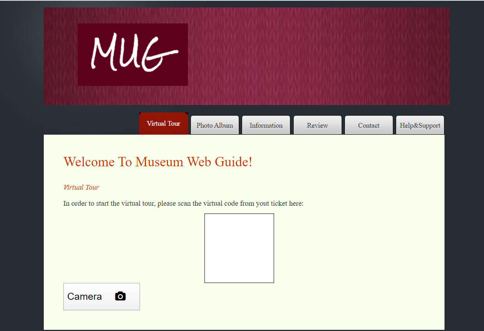
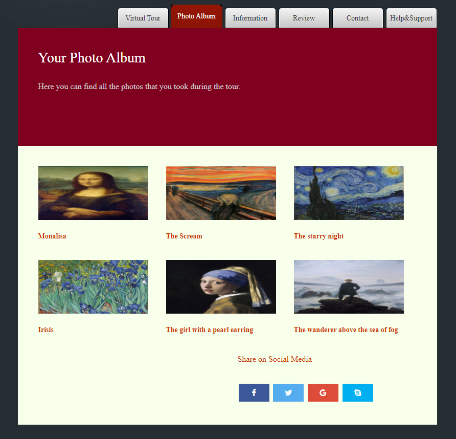
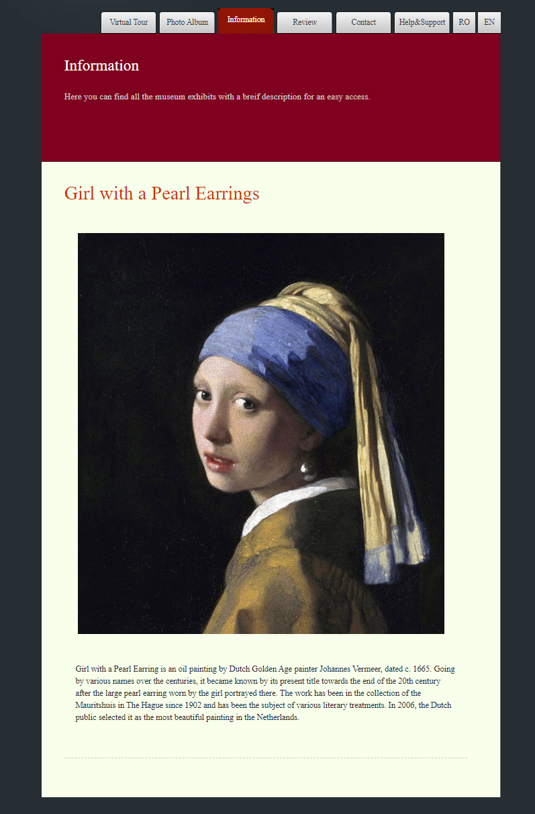
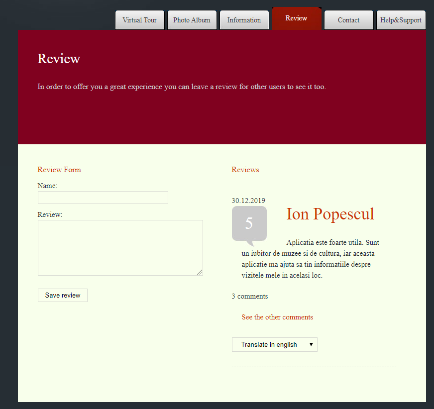
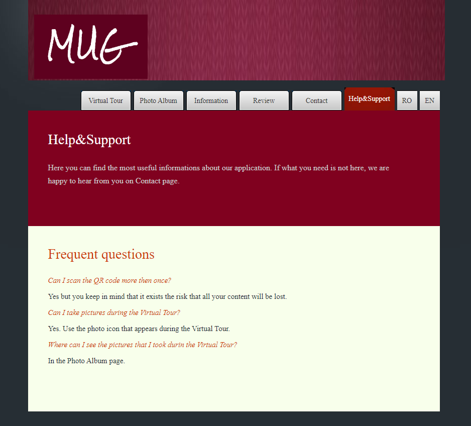
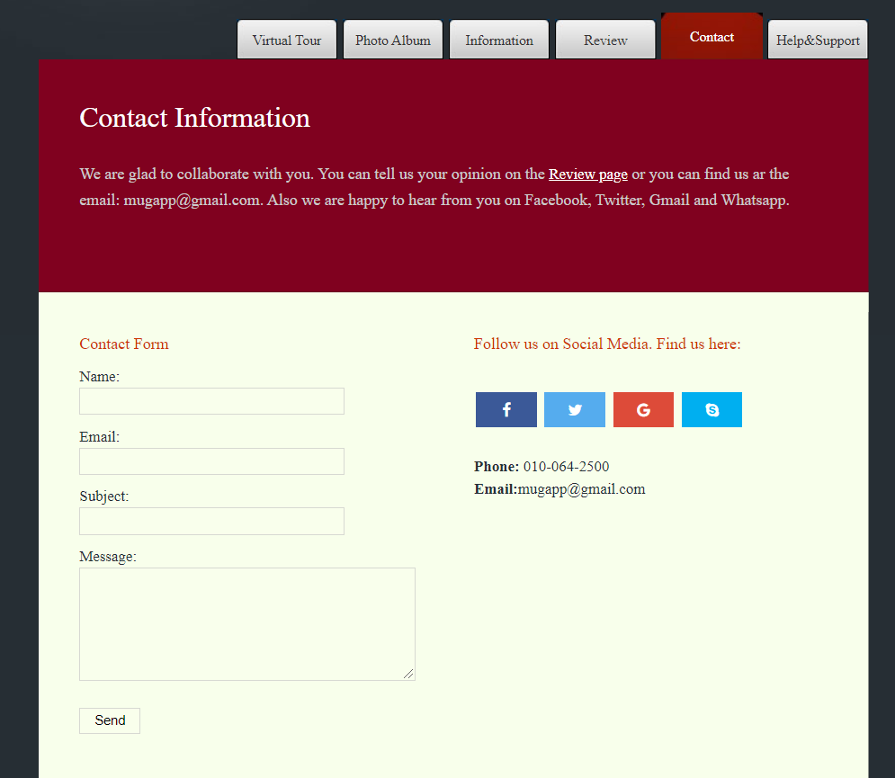

The following lines are supposed to describe the way of how the application works. The rows below describes the main flows of the application as follows:
2. Introduction
The application is a web system able to properly assist a museum visitor. Basically, in order to have access to the museum's tour, user is invited to scan his ticket which contains a QR code. Once the QR code is scanned, user has access to the application which provides information about the respective museum and its objects of culture. When the user stops in front of an object from the museum, the virtual tour also is interrupted until the user goes ahead. The application provides two languages for the user: romanian and english languages. Based on his preferences, user can set the language and the application will be translated.
3. Structure
The application contains 6 pages: Virtual tour, Photo album, Information, Contact, Review and Help & Support. Each page is detailed in the following rows.
3.1. Virtual Tour Page
This page will contain a section for scanning the QR code. In order for the tour to start, scanning of the QR code from the ticket must be done. After this, the tour will start. This will consist of an interactive experience. The video and audio will have a common start. After that, depending on what area you are in the museum, the presentation will change accordingly. In order for the app to know the user positioning, the RFID technology will be used. There will be for each area of the museum an RFID transmitor. The app will read the data from the RFID and will show to the user the informations from that section. The presentation can be paused when needed, otherwise will contain at it's normal speed. There is also a button that will allow to activate the camera in order to take pictures. At this moment the tour will stop. After the picture is taken, the user can access the button "Back" and the tour will contain. At the end the tour cannot be reloaded. The beginning page in which you can scan a new QR will appear. When user is situated in onother page and he clicks on the logo from the header, he will be redirected to the Virtual tour page.
3.2. Photo Album Page
Here the user will find all the pictures that he tooked during the tour. He also has multiple options for share on social media on which he can select.
3.3. Information Page
The page Information contains all the exhibits that were in the museum with a breif description so that the user can access easily. In this way he doesn't have to access all the virtual tour again. After a new museum is visitated, the new exhibits will be added here too.
3.4. Reviews Page
In the review page, user have access to reviews which belong others' users and also theirs comments. Using Instant bot, user is able to translate each review in 104 languages, based on his preferences. Also, user is able to leave his own review filling up the form placed in the right side of the page. He needs to leave his Name, which is a mandatory field and the review field too. In the moment when he submits the review, the review becomes visible for all the Mug's users. Until the two fiels aren't filled in, the button Save Review is unenabled. Also, the users can communicate through the comment in order to share their experiences over their tour on the museums.
3.5. Help&Support Page
The page Help & Support page comes with a few instructions of using the application. Also, the application offers the possibility to translate the Q&As in enghlish or romanian.
3.6. Contact Page
The contact page comes with some information about the ways to contact us. There is mentioned the email and the phone number. Also, users can find in the Contact page, the link to the Review page where they can leave their feedback. In the Contact Page, the user is able to leave his contact's details. The name, email, subject and message fields are mandatory in order to leave the contact details. Until all the fields aren't filled in, the Send button isn't enabled. The last but not the least, users can find links to the Facebook page, Twitter, Whatsapp and gmail.